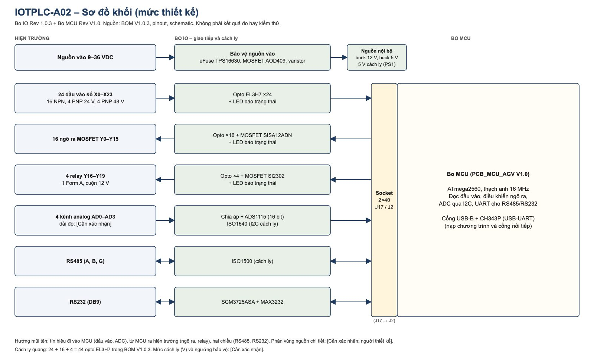
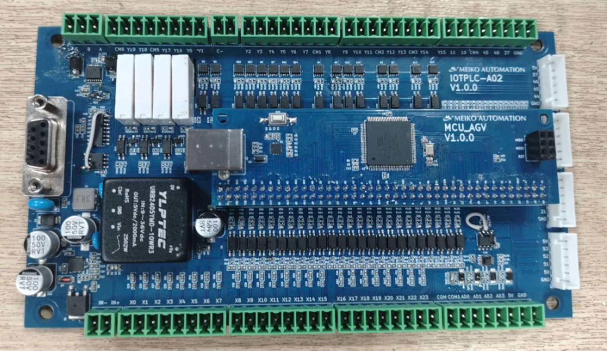
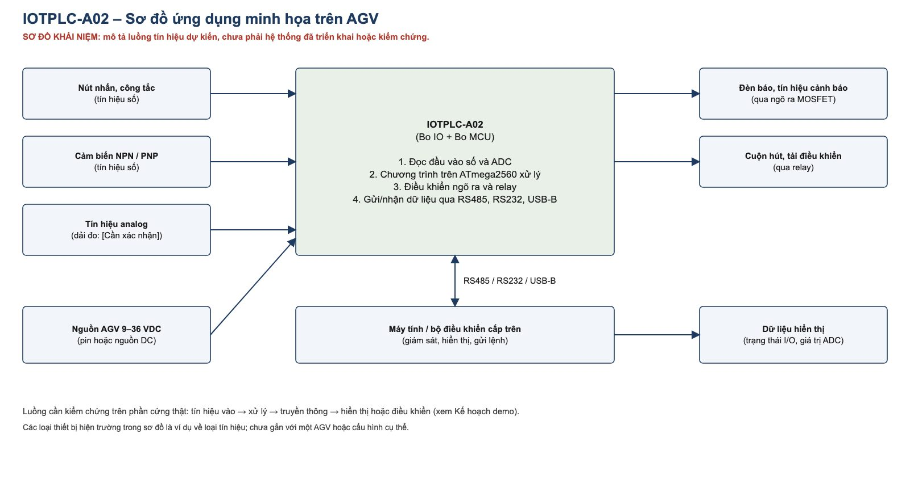
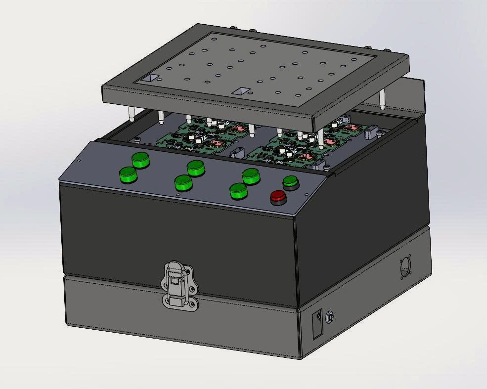

PCB_IOTPLC-A02
- Nguồn vào 9–36 VDC (mức thiết kế)
- 24 đầu vào số, 16 ngõ ra MOSFET, 4 relay
- 4 kênh ADC 16 bit
- RS485 cách ly, RS232 DB9, I2C cách ly
IOTPLC-A02 được xác định là Bo IO Rev 1.0.3 ghép với Bo MCU Rev V1.0 qua socket 2×40, với phạm vi ứng dụng công bố ban đầu là AGV. Dữ liệu hiện ở trạng thái dự kiến vì hồ sơ và tài liệu sản phẩm vẫn là DRAFT, còn cần kiểm thử và xác nhận trước khi công bố.
Nội dung tạm: thông tin sản phẩm đang được hoàn thiện và cần xác nhận cùng đội kỹ thuật.

Số liệu mức thiết kế (BOM V1.0.3, pinout, schematic); chưa có kết quả kiểm thử trên Rev 1.0.3.
Bo IO Rev 1.0.3 ghép Bo MCU Rev V1.0 qua socket 2×40.
Thiết kế nêu 24 đầu vào số, 16 ngõ ra MOSFET và 4 relay; các thông số vận hành còn cần xác nhận.
Thiết kế nêu RS485 cách ly, RS232 DB9, I2C cách ly và UART; USB-B nằm trên Bo MCU.
Bản đầu chỉ nêu ứng dụng AGV; các ứng dụng khác chưa được xác nhận.
Bo IO xử lý nguồn vào, đầu vào, ngõ ra, ADC và truyền thông; Bo MCU chạy ATmega2560. Hai bo nối nhau qua socket 2×40.

Số lượng và nhóm kênh theo thiết kế và pinout. Định mức điện áp, dòng và dải đo đang chờ người thiết kế xác nhận nên chưa công bố.
Cuộn để xem từng lớp của sản phẩm. Mỗi ảnh được gắn nhãn loại: render 3D, ảnh mẫu hoặc sơ đồ.
Bo IO: nguồn vào, 24 đầu vào số, 16 ngõ ra MOSFET, 4 relay, 4 kênh ADC, RS485 / RS232 / I2C.Bo MCU: ATmega2560 16 MHz, cổng USB-B kèm mạch USB-UART, header 2×40 ghép với Bo IO.
Bo IO Rev 1.0.3 ghép Bo MCU Rev V1.0 qua socket 2×40, thành một bộ đọc tín hiệu, điều khiển và truyền thông.
Thông số dự kiến — cần xác nhận. Ảnh là render 3D dựng từ dữ liệu thiết kế, không phải ảnh sản phẩm thật.
Nhìn từ trên xuống, hai hàng đầu nối cắm rời chia các nhóm kênh ở hai cạnh dài của Bo IO.
Số lượng theo thiết kế. Định mức dòng và áp: chưa công bố, chờ xác nhận.
Đầu nối cắm rời bước 3,81 mm, JST XH 6 chân (4 cái) và DB9 cho RS232. Cổng USB-B nằm trên Bo MCU.
Bo MCU Rev V1.0 chạy ATmega2560, thạch anh 16 MHz, có cổng USB-B kèm mạch USB-UART và header 2×40 để ghép lên Bo IO.
Thông số dự kiến — cần xác nhận. Kích thước Bo MCU và chiều cao bộ ghép: chưa công bố.
Mặt đáy chứa đi dây và các linh kiện còn lại. Ảnh render mặt dưới đang chờ dựng lại nên là nội dung tạm.
Hiện chưa có ảnh chụp bo thực Rev 1.0.3.

Thông số được trích từ tài liệu kỹ thuật của Meiko. Dòng ghi "dự kiến" cần được xác nhận cùng đội kỹ thuật cho cấu hình cụ thể.
| Baseline phần cứng | Bo IO Rev 1.0.3 + Bo MCU Rev V1.0, nối qua socket 2×40 | Thông số dự kiến — cần xác nhận |
|---|---|---|
| Nguồn vào | 9–36 VDC | Thông số dự kiến — cần xác nhận |
| Đầu vào số | 24 kênh: 16 NPN (X0–X15), 4 PNP 48 V (X16–X19), 4 PNP 24 V (X20–X23); cách ly quang và LED | Thông số dự kiến — cần xác nhận |
| Ngõ ra MOSFET | 16 ngõ ra (Y0–Y15), cách ly quang, LED | Thông số dự kiến — cần xác nhận |
| Relay | 4 relay (Y16–Y19), 1 Form A (SPST-NO), cuộn 12 V | Thông số dự kiến — cần xác nhận |
| ADC | 4 kênh (AD0–AD3), 16 bit (ADS1115), giao tiếp I2C | Thông số dự kiến — cần xác nhận |
| Giao tiếp | RS485 cách ly, RS232 (DB9), I2C cách ly, UART; USB-B trên Bo MCU | Thông số dự kiến — cần xác nhận |
| Vi điều khiển | ATmega2560, 16 MHz | Thông số dự kiến — cần xác nhận |
| Kích thước Bo IO | 175 × 96,7 mm; 4 lỗ M4 cách nhau 161,5 × 81 mm | Thông số dự kiến — cần xác nhận |
| Đầu nối | Cắm rời bước 3,81 mm, JST XH 6 chân (4 cái), DB9, USB-B (Bo MCU) | Thông số dự kiến — cần xác nhận |
Bản đầu chỉ nêu ứng dụng AGV. Kịch bản dưới đây là dự kiến, cần kiểm chứng trên bo thật.
Kịch bản chưa được thực hiện trên phần cứng thật, nên chưa phải bằng chứng về khả năng đã triển khai.

Các tài liệu này là bản nháp nội bộ, chưa phát hành nên chưa có liên kết tải.
Hai bo ghép với nhau qua socket 2×40 chân: Bo IO (Rev 1.0.3) và Bo MCU (Rev V1.0) dùng vi điều khiển ATmega2560.
24 đầu vào số: 16 NPN (X0–X15), 4 PNP 48 V (X16–X19) và 4 PNP 24 V (X20–X23), có cách ly quang và LED báo trạng thái (mức thiết kế).
16 ngõ ra MOSFET (Y0–Y15) và 4 relay (Y16–Y19), có cách ly quang và LED báo trạng thái (mức thiết kế). Định mức dòng và áp: chưa công bố, đang chờ xác nhận.
Relay 1 Form A (SPST-NO), cuộn 12 V, tiếp điểm cho tải DC. Định mức tiếp điểm: chưa công bố, đang chờ xác nhận.
4 kênh, 16 bit (ADS1115), giao tiếp I2C. Dải đo từng kênh: chưa công bố, đang chờ đo xác nhận.
RS485 cách ly, RS232 cổng DB9, I2C cách ly, UART và cổng USB-B trên Bo MCU.
Tài liệu hiện chỉ nêu ứng dụng AGV.


Cần cấu hình cho dự án của bạn? Trao đổi với đội kỹ thuật Meiko.
Yêu cầu tư vấn / báo giá